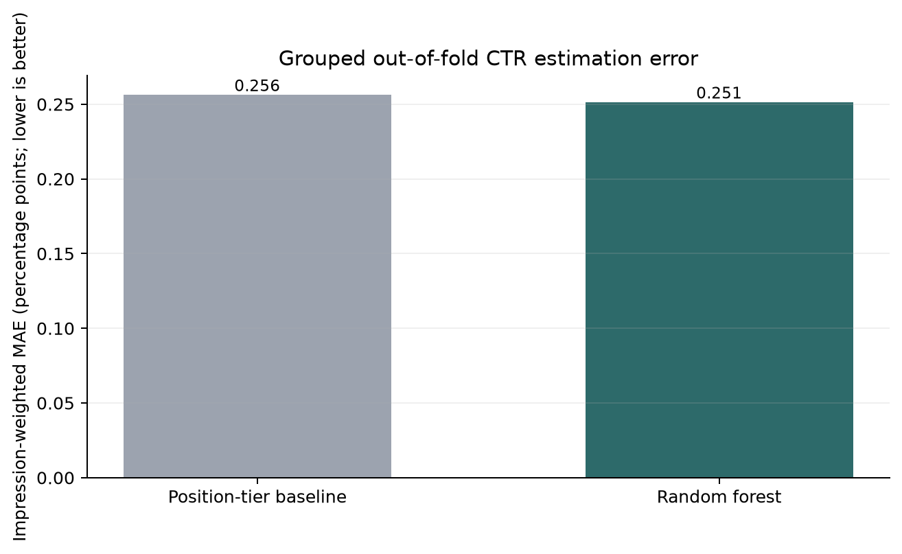
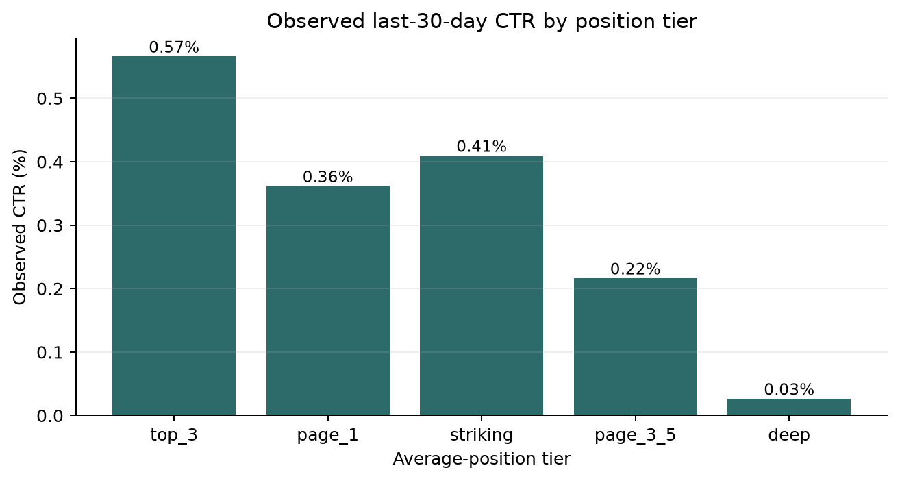
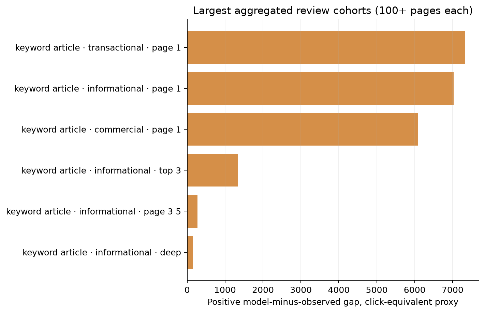

Abstract
This study asks whether page and search-context fields can estimate same-window click-through rate (CTR) and support review prioritization in anonymized content-performance data. We use FlyRank’s public 30,000-row starter release, define CTR over the latest 30-day window, and restrict evaluation to pages with at least 50 impressions. A position-tier weighted-mean baseline is compared with a random-forest regressor using five client-grouped folds and no client/page identifiers or outcome-derived feature fields. The model’s impression-weighted MAE is 0.251 percentage points versus 0.256 for the baseline (1.9% lower), with performance varying across held-out folds. The ranked cohorts are descriptive decision support—not a forecast, causal estimate, or guaranteed click uplift—and identify groups where aggregate observed CTR is below model expectation.
Introduction / problem statement
Content teams can have more pages to inspect than they can review in one cycle. This study supports a narrow operational decision: which sufficiently visible page cohorts might merit a closer CTR and snippet review, after accounting for broad position and content context?
The analysis does not claim that low CTR proves a page is defective. Search-result layout, query mix, brand demand, seasonality, and user intent can all affect clicks. The ranking is a triage aid for human review, not an instruction to rewrite content automatically.
Data
Source: FlyRank/internship-starter, a public anonymized starter dataset, 30,000 rows and 53 columns. The analysis uses the single content-performance table. It defines the response as clicks divided by impressions in clicks_last_30d and impressions_last_30d; the release also includes previous-30-day and 90-day aggregates.
The starter dataset card does not state absolute calendar dates for these relative windows. Therefore, the paper reports the window definitions rather than inventing dates. Rows with fewer than 50 latest-window impressions were excluded from model fitting, validation, and ranking to reduce volatility in very low-volume CTR values.
Methodology
The target is same-window CTR in percentage points. A page is considered eligible at 50 or more impressions. This is a cross-sectional prioritization exercise, not a future-window prediction.
Features and exclusions
The model uses average position, search volume, competition, word count, content age, days since update, content type, main intent, competition level, age tier, freshness tier, and position tier. Page and client identifiers are not model features. The model excludes clicks, impressions, CTR fields, sessions and engagement metrics, trend variables, product flags, health scores, provider/model metadata, and other outcome-window measures. Categorical values are one-hot encoded; numeric missing values use training-fold medians and categorical missing values use training-fold modes.
Baseline, model, and validation
The baseline predicts each held-out page using the training-fold, impression-weighted mean CTR for its position tier, with the training-fold global mean as a fallback. The comparison model is a random forest (250 trees, minimum leaf size 12, max features 0.8). Training weights are square-root impression weights capped at the training-fold 95th percentile.
We use five-fold GroupKFold validation, holding all records for each pseudonymized client together. Metrics are pooled out-of-fold and impression-weighted. The primary measure is weighted mean absolute error (MAE), in CTR percentage points; lower is better. All decisions about model fitting and preprocessing are learned within each training fold.
Leakage checks
Client/content hashes and fields derived directly from clicks, impressions, trends, engagement, or precomputed intervention flags are excluded from features. Position is deliberately retained as contextual information for same-window estimation, so the validation supports association-based triage only. No future labels are available in this starter release; the analysis therefore makes no future-outcome claim.
Results
On pooled out-of-fold predictions, the random forest lowers impression-weighted MAE by 1.9% relative to the position-tier baseline. The absolute difference is about 0.005 percentage points. Fold-level results vary: the model does not improve MAE in every held-out fold. This is a small directional gain, not evidence that a complex model is broadly superior.


Fold check
There are five held-out client folds. The best-performing split does not guarantee performance on a new client or time period. Fold sizes vary because the client groups contain different numbers of eligible pages.
Overall context
Weighted CTR among eligible pages is 0.345%. The observed position-tier pattern is descriptive and should not be interpreted as a causal effect of changing position.
Limitations and honest framing
- The public starter release does not include absolute calendar dates for the latest/previous windows, nor page titles, URLs, or query-level context.
- Low-volume pages are excluded from evaluation, and small recommendation groups are suppressed; results do not describe every page.
- Client-held-out validation reduces client overlap, but there are only 32 pseudonymized client groups and the data is a single snapshot.
- The target and position features describe the same general period. The exercise is not a prospective forecast, controlled experiment, or estimate of impact from a content refresh.
- The improvement over baseline is modest and not uniform across folds. Model residuals may reflect omitted factors rather than fixable content issues.
- The positive click-equivalent gap used to rank cohorts is the out-of-fold expected-versus-observed aggregate difference. It is not an estimate of recoverable clicks, a promised uplift, or a causal effect.
Interpret all findings as observed associations and prioritization signals. They do not prove how Google ranks pages or that any particular change caused a refresh effect.
Ranked recommendations
The table ranks aggregate cohorts by the positive difference between their out-of-fold model-expected clicks and observed clicks. Rates and differences are aggregate-only; a cohort-level discrepancy is a reason to investigate, not proof that its members need edits.
| Content type | Intent | Position tier | Eligible pages | Observed CTR | Expected CTR | Positive gap proxy* |
|---|---|---|---|---|---|---|
| keyword article | transactional | page 1 | 1,792 | 0.373% | 0.482% | 7,327 |
| keyword article | informational | page 1 | 4,143 | 0.366% | 0.415% | 7,024 |
| keyword article | commercial | page 1 | 1,245 | 0.337% | 0.455% | 6,081 |
| keyword article | informational | top 3 | 190 | 0.481% | 0.614% | 1,338 |
| keyword article | informational | page 3 5 | 3,255 | 0.201% | 0.206% | 270 |
| keyword article | informational | deep | 410 | 0.027% | 0.060% | 153 |

Action playbook
- Page 1 cohorts: audit snippet-to-intent alignment, title/description choices, and competing result formats. Preserve visibility and test controlled changes where practical.
- Pages lower on the results page: check relevance, coverage, and technical/indexing fundamentals first; a CTR-only edit may not address weak visibility.
- For all groups: inspect actual examples privately in the authorized analytics environment, verify the underlying query mix, prioritize human review, and record outcomes before scaling changes.
*“Positive gap proxy” is the cohort’s out-of-fold expected click count minus its observed click count, floored at zero. It is a descriptive ranking statistic—not a causal or guaranteed uplift.
Reproducibility
The pipeline downloads the public starter CSV to /tmp, filters and models the data, then saves only aggregate metrics and charts. To rerun from the repository root:
python -m pip install pandas numpy scikit-learn matplotlib
python work/analyze.py
python work/build_paper.pyCapstone notebookAnalysis sourceAggregate resultsPaper renderer
The dataset download source and release details are linked above. No credentials or gated warehouse token are required for this public-starter version.
Acknowledgments & data credit
Built on the FlyRank ML Internship dataset. Thanks to FlyRank for providing anonymized educational data and the starter workflow.
References: FlyRank Internship Starter Dataset card; FlyRank Internship Starter Guide.